一加测试机从环境配置到救砖全攻略
本文所述的一切技术仅供网络安全研究学习之用，请勿用于任何的违法用途，否则由此所产生的一切后果自负！
主要是公众号之前因为一些原因导致停更了，加上其他的原因很多东西其实都只沉积在个人笔记里了，刚好这两天入了个一加6T的测试机，配环境的时候也遇到了不少坑，但是在网上好像看文章别人配环境都是一马平川，就顺手把踩坑和解决的过程记录分享一下。
首先装一下1+ USB Driver，官方论坛都能找到
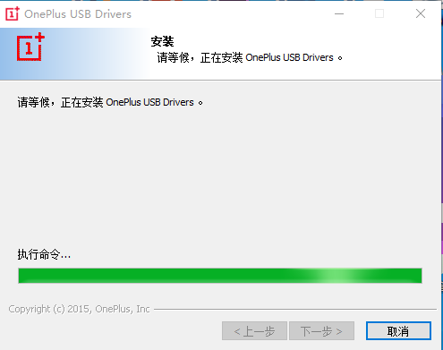
主要是为了让电脑检测到设备，然后安装驱动，官方论坛也有
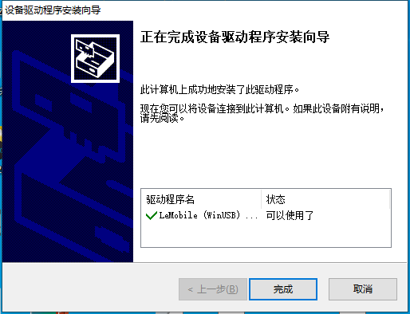
第一步就已经遇到坑了，如果电脑上有模拟器虚拟机啥的没关干净，存在僵尸进程的时候是无法安装成功的，建议重启后安装，否则就会卡在执行命令。
如果这两个包找不到，建议直接去找一个一加万能工具包，正常的工具包测试不带毒，如果是第三方渠道下载的建议扫一扫，不排除被投毒的可能。因为我在下的时候就遇到一个疑似被投毒的工具包，后续如果有时间可能会出一篇分析文章。
打开开发者选项，允许USB调试和OEM解锁，然后使用adb命令解锁BootLoader
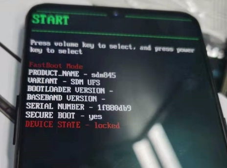
使用音量键选择解锁后电源键确认，这步忘了拍照了。然后重启进入系统需要重新打开开发者模式并启用USB调试
接下来使用高级重启引导加载器，也可以用adb reboot recovery命令进行
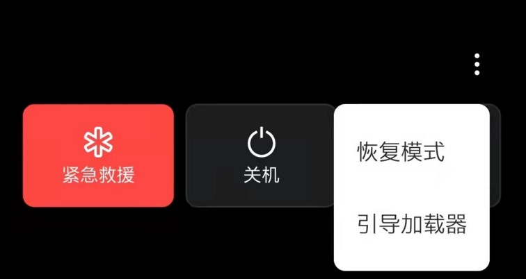
在设备管理器里确定驱动情况
准备好TWRP的包，使用fastboot命令进入临时系统
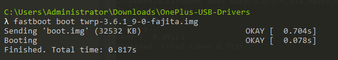
中间好像出了什么奇怪的问题，直接裂开
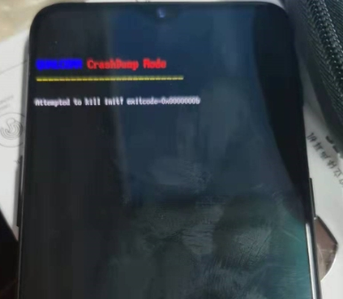
怀疑是驱动也出了什么问题，似乎是高通的驱动问题？
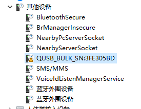
于是网上下了个一加万能工具包
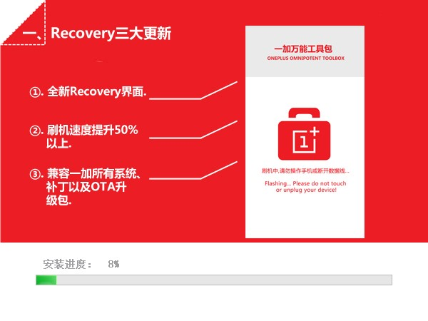
下完之后先把能装的驱动都装上，然后重刷一下系统，完成救砖之后降级了一下系统（原来是安卓11）降级到9或者10都可以，一加官方论坛是提供全量包的，可能由于系统版本原因导致无法刷入，降级之后重刷TWRP就成功了，可以改个语言，也可以不改
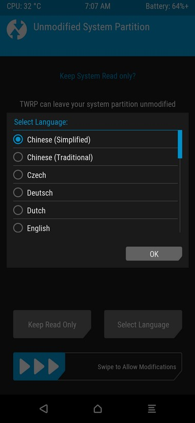
进入高级-》Sideload-》滑块
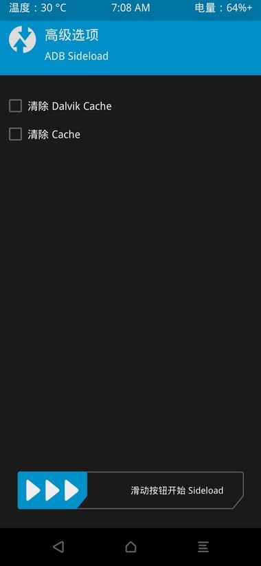
将完整的twrp包刷入
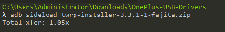
之后重新进入恢复模式，重新进行sideload，刷入magisk
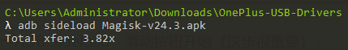
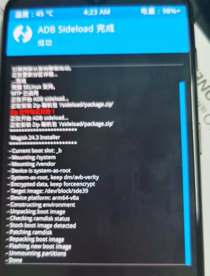
重启后magisk已安装，直接su即可切换到root
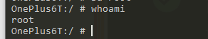
完成magisk安装后就已经root完了，现在就是一些基础的环境配置，建议装一下scrcpy这款神器，可以直接电脑操作，特别方便，截止发文的最新下载地址
https://github.com/Genymobile/scrcpy/releases/tag/v1.23
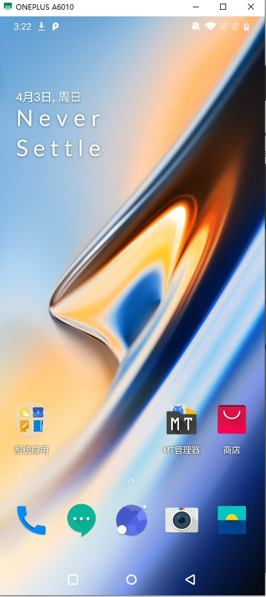
接下来安装rirucore，在github获取官方包后用magisk装一下，当然进入recovery模式和之前一样用sideload也可以刷入，下载地址
https://github.com/RikkaApps/Riru/releases/
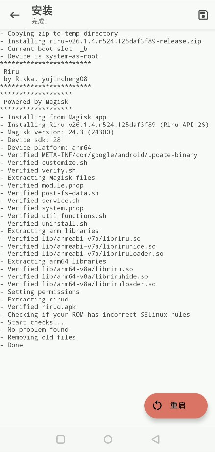
重启之后没有出现新的软件图标，在magisk的模块中可以看到已经加载
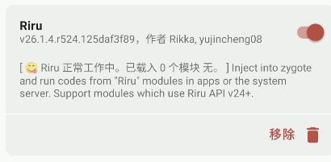
继续安装Edxposed的时候又出问题了，配个环境真就一直踩坑
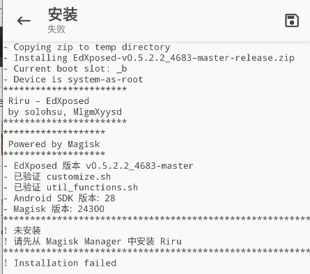
Edxposed检测不到Riru框架了，主要版本太新，还是降版本解决问题，使用25版本的Riru解决问题
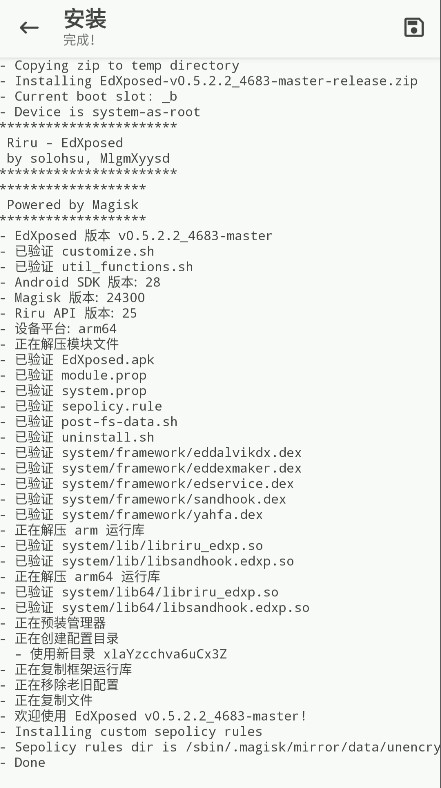
重启完就可以看到我们的Edxposed了
根据提示安装完整版的Edxposed
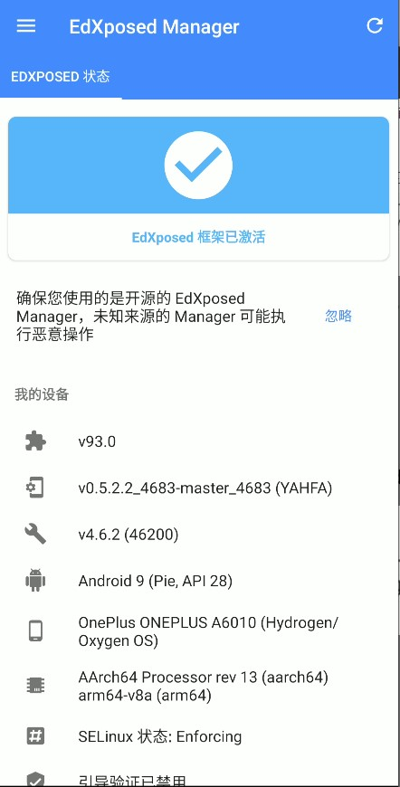
之后就是一些常规的环境配置，比如BP的证书导入，由于Android7开始系统更改了信任用户安装的证书的默认行为，应用程序仅信任系统级CA，所以需要对证书进行一定的更改才能使用（其实这个文章也有很多人写过了，我这里就再水一水）
建议重新生成BP证书，在Proxy-Options中进行
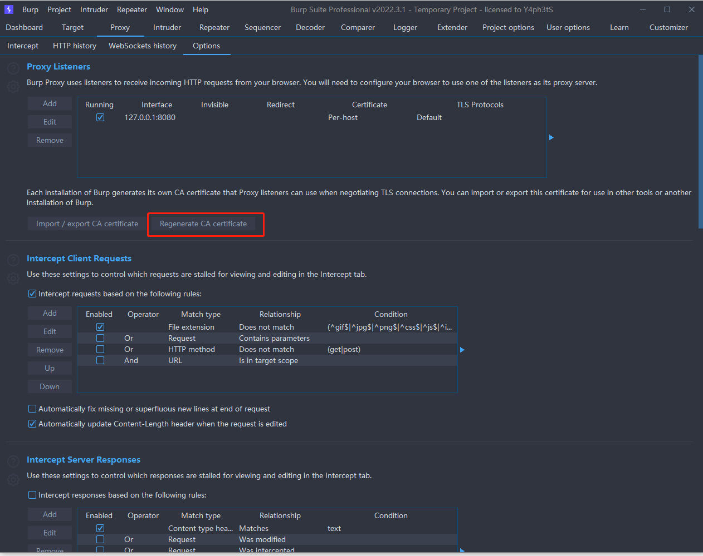
对证书进行一波简单操作
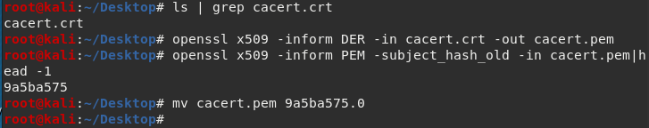
通过ADB push将证书移到对应的目录下
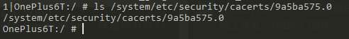
测试一下访问百度可以正常抓到包，证书安装成功
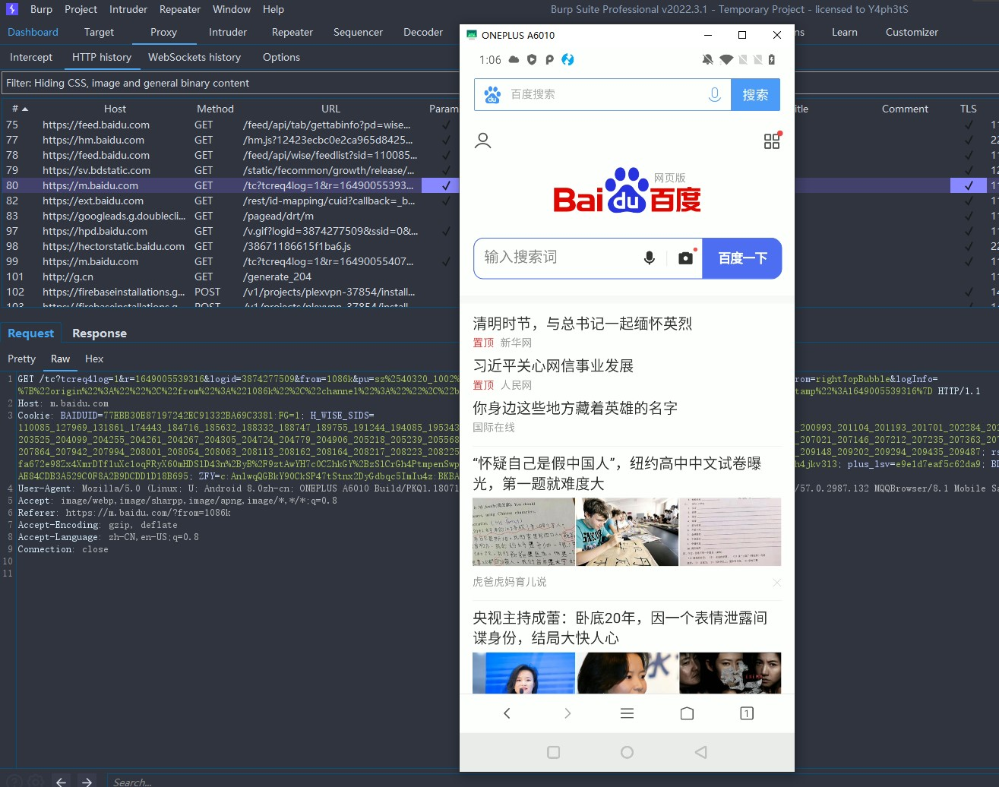
接着再装一些基础环境比如frida等，可以按需进行配置
顺便简单写一下frida的环境配置，首先去官网下载对应Python版本的frida包
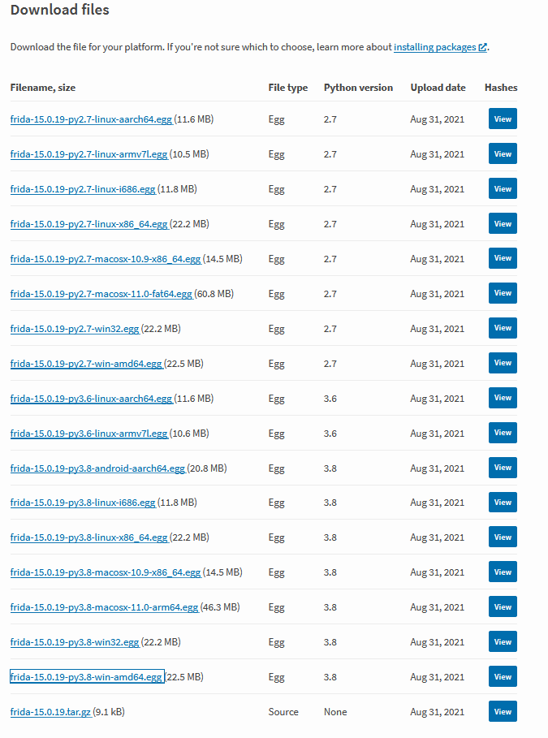
下载完成后进行安装，一般在运行setup.py的时候会自动下载frida对应的egg，通常来说因为大家都懂的原因下载速度会很慢，只要找到输出的下载目录直接把刚刚下载的egg文件拖进去再重新执行install命令就行
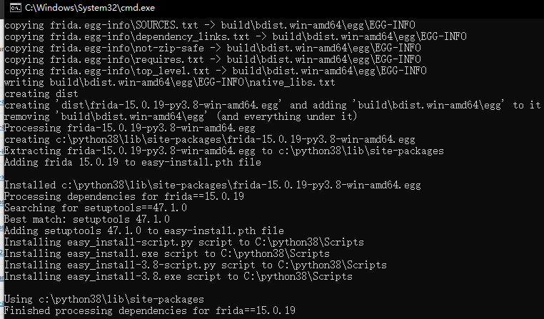
安装完成后继续安装frida-tools
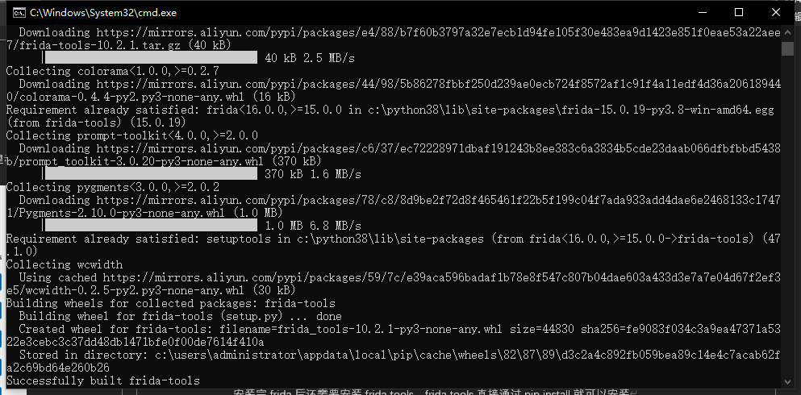
接下来就可以在cmd窗口中检测自己的frida是否安装完成
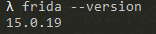
下载对应的frida-server，通过adbpush命令传入测试机，并通过chmod命令赋予执行权限
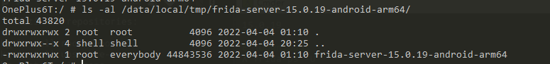
启动frida-server,通过frida-ps -U命令查看功能是否正常
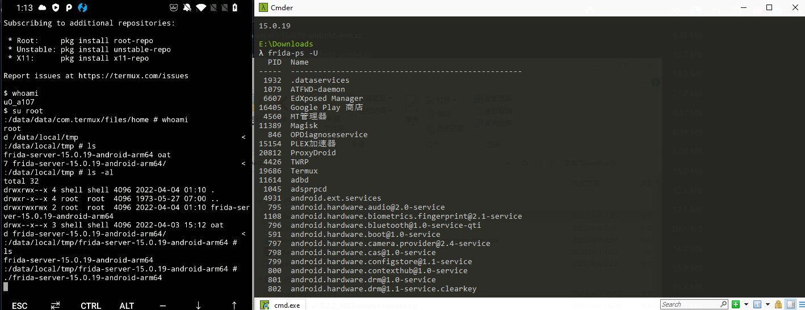
至于安卓测试的一些东西后面可能会发出来，其实这些文章别人也写了挺多了，这次就当是记录一下，文章很水，不喜勿喷。